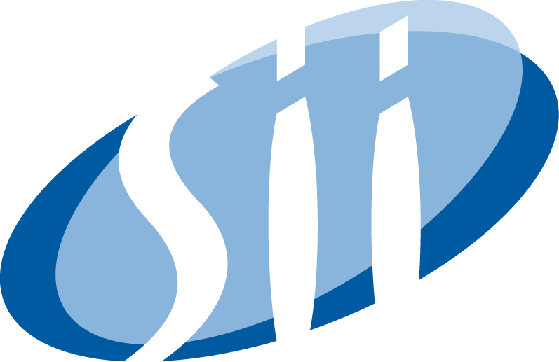
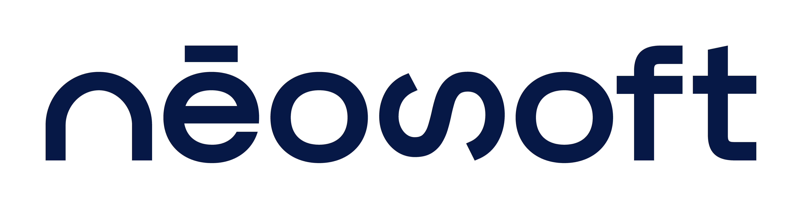

Positionné depuis sa création en 2003 entre le cabinet de conseil généraliste et l’ESN spécialisée, le groupe ACENSI accompagne plus de 100 clients dans la gestion de leurs projets IT.
En 2012, le pôle assurance et protection sociale est créé à Paris, suivie en 2015 de son antenne en région Centre (Orléans et Tours) totalisant aujourd’hui plus de 140 talents. Notre cœur de métier : accompagner les entreprises dans la gestion de leurs projets informatiques : conseil technique, gestion et utilisation de la data, amélioration des expériences digitales.

Fondé en 1979, le Groupe SII est une ESN internationale présente sur 4 continents, accompagnant les grands acteurs de tous les secteurs dans leurs transformations technologiques et numériques. Grâce à son positionnement hybride entre conseil et services numériques, SII intervient aussi bien sur l’évolution des systèmes d’information que sur la conception des produits et services de demain. Porté par un modèle décentralisé, le Groupe mise sur la proximité client, l’agilité et l’engagement de ses collaborateurs. La promesse « Let’s Tech Together » incarne une culture fondée sur l’innovation, le collectif et l’inclusivité, reconnue par les labels EcoVadis Gold et Great Place To Work. Au niveau régional, SII Atlantique, et son implantation, SII Tours, s’inscrit pleinement dans cette dynamique. Fortement ancrée sur son territoire, l’agence de Tours accompagne ses clients avec expertise et réactivité, tout en offrant un environnement à taille humaine favorisant le développement des compétences et l’épanouissement professionnel.

Néosoft est un groupe indépendant de conseil en transformation digitale qui réunit aujourd’hui plus de **1 650 talents**, organisés en communautés d’experts : Conseil & Agilité, Cybersécurité, Data, DevOps, Infrastructures & Cloud et Software Engineering. Depuis sa création à Rennes en 2005, nous accompagnons nos clients avec une vision **360° de l’innovation**, en conjuguant excellence, exigence et esprit de dépassement. Notre ambition : transformer durablement les organisations sur six marchés clés : Assurance & Protection sociale, Banque & Finance, Énergie & Industrie, Retail & e-commerce, Secteur public, Télécom & Médias. Présents au plus près de nos clients, nous comptons aujourd’hui **17 implantations partout en France ainsi qu’à Casablanca**, pour conjuguer proximité, expertise locale et ouverture internationale. Mais notre performance repose avant tout sur l’humain. Nous cultivons un environnement où chacun peut apprendre, évoluer et s’engager, avec un management de proximité et une forte culture de la confiance. Conscients de notre responsabilité, nous agissons concrètement pour réduire notre impact environnemental, promouvoir un numérique plus inclusif et créer des conditions de travail durables. Cet engagement, au cœur de notre modèle, est reconnu par le label Engagé RSE. Chez Néosoft, la transformation digitale est aussi une transformation humaine.